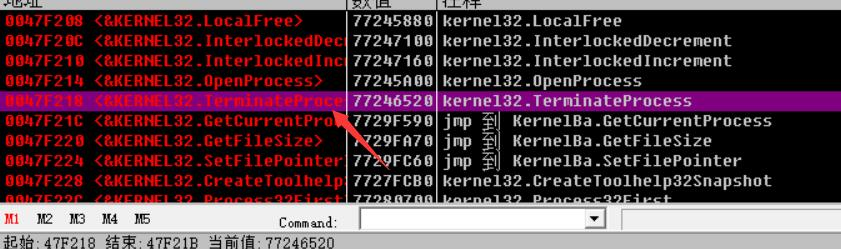
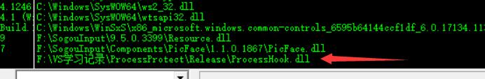
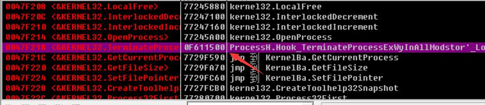
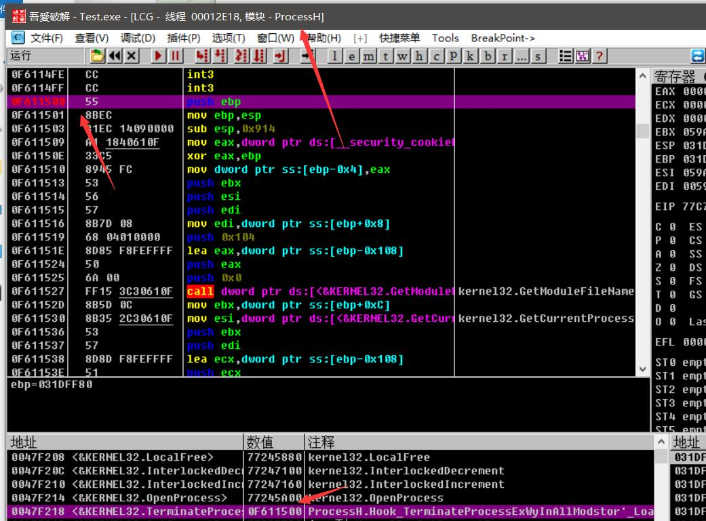

API钩子
其实准确的说不是通过SetWindowsHookEx这个函数进行设置钩子，因为这个函数似乎实现不了接管函数的效果，那么该如何才能做到接管其他程序的函数是一个比较关键的一点。
进程保护程序
这是一个比较典型的例子，就是在程序想要调用TerminateProcess异常结束其他进程的时候，我们将它给干掉，看一下实现效果：
但是在我测试的过程中，MFC程序只要被DLL加载之后就会接受消息出错，类似按钮消息之类的一些消息，但易语言是没什么问题的。
实现方法
其实结合之前的例子，基本上可以说我们已经可以完成了，我们要HOOK程序的某个API函数并且更改某个程序的内容，那么我们就需要有一块内存区域是在这个程序中，所以我们第一步就是需要将我们写好的DLL注入进去，注入的方法有很多，这里是通过消息处理的方法进行注入的。将我们的DLL注入后我们就读取注入程序的IAT，将我们想要修改的函数指向地址修改为我们的相同堆栈格式的函数替换进去（传参类型和返回值占用字节数不一样的话呢会出错的，这种错一般在写Call自动打怪的时候会常见），但是还有一种情况我们等下说。
CAPIHook类的实现
首先我们要明确，我们要HOOK的函数可能在用户编写程序的过程中会有不少，特别是那种EX，A，W这些版本的，所以我们需要给用户一个比较好的体验的话呢我们需要构造一个链表的结构，比较简单的就是定义一个静态的头指针，然后我们要钩的时候我们就添加就好了，为什么要这么样，我们之后再说，看下我们头文件的定义：
1 |
|
- 我们构造函数中要传入的是模块名称，函数名称，要替换成的函数的地址，是否要Hook本模块的。
- 析构函数因为如果有子类的话呢我们就要用到虚函数，否则释放不完全，里面将被替换的函数再替换回去
- 重载了PROC这个操作符，便于操作，在写DLL的时候有个地方是要用到的
- 几个私有变量：
- 模块名称
- 函数原地址（用于替换会去）
- 函数HOOK的地址
- 是否要包含我们自己的模块
- 两个静态函数，一个是替换一个模块的一个函数，另一个是替换所有模块的这个函数
- 一个静态成员，用来加载链表的，一个下一个节点的地址
下面就需要注意了，由于某些函数是在运行中动态的加载DLL的，所有有的时候我们就是需要是否要加载DLL了，所以我们不仅要HOOK用户钩住的函数还需要HOOK住动态加载DLL的函数和获取函数地址的函数。各个版本的都需要HOOK住
HookNewlyLoadedModule这个函数用来将我们新加载的模块的进行重新HOOK一遍。- 接下来的几个静态函数是新的替换掉的函数。
- 下面几个静态变量是用来HOOK上面这几个静态函数的
类的定义
1 |
|
- 首先源文件中先将我们我们的头指针设置为NULL
- 在构造函数的时候我们现将我们的HOOK信息初始化一下，然后用下面将要写的替换所有模块的函数替换，然后将自己设置为链表顶端。
- 析构函数的时候我们将所有的模块替换回去，然后从链表中将自身删除。
- 然后初始化我们的挂钩函数
HookNewlyLoadedModule这个函数是被下面的加载模块调用的，第二个Flags是在EX版本用到的，当存在LOAD_LIBRARY_AS_DATAFILE这样子的一个标志位的时候说明是内存镜像的方式进行载入的，所以我们需要将其替换一下。- 下面几个LoadLibrary(Ex)类型的函数大同小异。
GetProcAddress这个函数的时候是检查是否有我们要的函数，如果有的话呢就返回我们设置好的函数地址。- 上面这几个默认挂钩的函数是全局的不要忘记加::，否则会进入无限递归。
ReplaceIATEntryInOneMod这个函数我们之前写过，之前用的是PE的一个就够进行获取输入表的，我们这里使用ImageDirectoryEntryToData这个函数，这个函数不是很难，第二个标志位是需要注意的，我们要的是IAT，而且这个函数需要导入：#include <ImageHlp.h>，并且加载#pragma comment(lib,"ImageHlp")这个动态链接库。还需要注意的是我们需要修改内存的保护属性有的时候才能写IAT的内容，变成可读可写的内存块。还需要注意的是DLL大小写是不一样的，所以我们使用stricmp这个不区分大小写。ReplaceIATEntryInAllMods这个就是通过遍历当前进程所有的模块句柄，然后传进去，（进入上一个函数，判断有相同模块名称的然后就继续做）。
DLL模块的编写
1 | // ProcessHook.cpp : 定义 DLL 应用程序的导出函数。 |
首先这个extern我不太明白，但是根据我的感觉就是说使用这个变量g_TerminateProcess我们要遵守这个变量的一些命名规范，只有这样我们下面的强制转换才能返回我们的origin。
我们先定义我们自己的TerminateProcess，先将这个函数的原型定义出来，然后获取模块名称，然后配置字符串，下面这个之前没用到过，COPYDATASTRUCT这个就是一个数据传输的结构体：“其中dwData为32位的自定义数据， lpData为指向数据的指针，cbData为lpData指针指向数据的大小（字节数）。”从网上看到的，其实就是用来传送数据的，主要最后一个参数，我们将我们的字符串放进去就好。然后再给我们的窗口发消息，这个窗口是我们必须定义好的，如果SendMessage返回给我们-1，就是放行，我们就正常执行，这里可以看到使用了强制转换，(PROC)我们将会得到原先函数的地址，然后将这个PROC强制转换成我们的这个函数的原型，然后再调用就好了。
我们声明我们的全局变量，因为全局，所以一加载我们就会创建，这种感觉就好像MFC和安卓的那种感觉，在构造函数里写过程。
然后定义一个数据段，名字为”Wker”，将我们的钩子句柄放进去，下面就基本一样了，只不过我们在消息那里我们什么也不做，这里放钩子只是为了注入DLL，因为Message在可视化应用程序中基本都有。
1 | EXPORTS |
导出配置就和之前一样。
主程序编写
这个主程序就很简单了，有了DLL就好说了。
首先我们先把钩子函数给完善起来。
1 | BOOL WINAPI pSetSysHook(BOOL bInstall,DWORD dwThread = 0) |
就是和之前一样，但是我们这个是动态加载的，我们是先看看加没加载，加载了的话呢我们就不用了再LoadLibrary了，也就是我们要释放了。
消息处理：
1 | BOOL CProcessProtectDlg::OnCopyData(CWnd* pWnd, COPYDATASTRUCT* pCopyDataStruct) |
这个消息处理也比较简单就一个强制转换，但是返回值需要注意，这个返回值是确定我们是不是要关闭程序的，连接在DLL那一边的。
初始化窗口的时候：
1 | if(!pSetSysHook(TRUE,0)) |
销毁窗口的时候：
1 | void CProcessProtectDlg::OnDestroy() |
也是比较简单的。
程序跟踪
首先我们先用OD加载程序（加载的是关闭程序的）
首先先看我们的程序原先的函数定义位置为：

当我们程序加载进来的时候：

我们可以看到DLL成功加载，当然这里我是为了方便，用OD加载的，程序也是一样的。
再看我们的函数地址：

我们跳过去看一下。

可以看到就是我们的函数，而且确实是在我们的DLL领空。